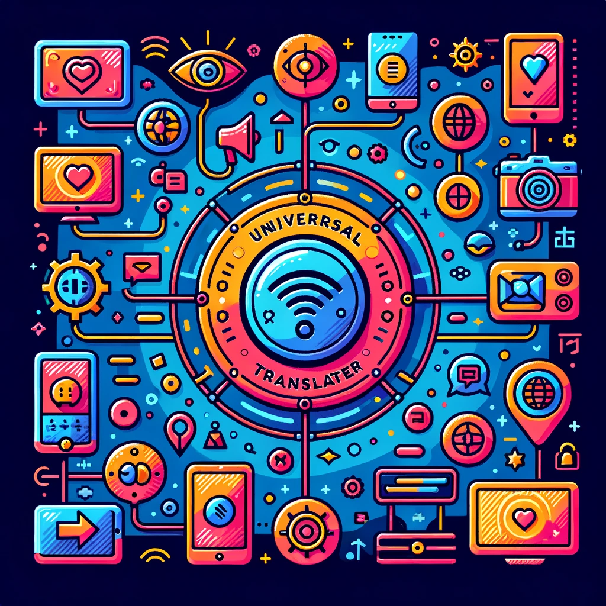

Features
Instantaneous translation, making conversations flow naturally.
Harnessing the power of cutting-edge AI to understand and translate languages with precision.

A universal solution designed to bridge languages and cultures worldwide.
Prioritizing voice as the primary medium, ensuring accessibility for all.